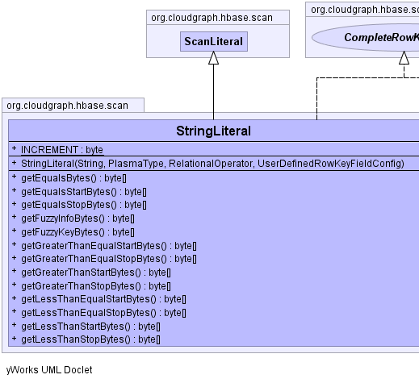
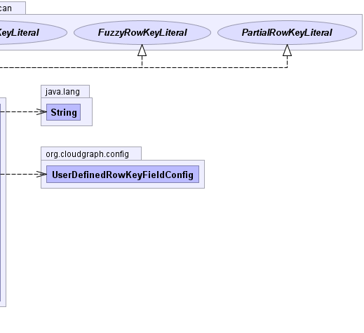

public class StringLiteral extends ScanLiteral implements PartialRowKeyLiteral, FuzzyRowKeyLiteral, CompleteRowKeyLiteral
WildcardStringLiteral, but nevertheless may
"participate" in a fuzzy scan as part of a composite row key and therefore
implements FuzzyRowKeyLiteral supplying only default key and info
bytes.TableConfig,
HBaseDataConverter,
WildcardStringLiteral|  |  |
| Modifier and Type | Field and Description |
|---|---|
static byte |
INCREMENT |
charset, dataConverter, fieldConfig, HASH_INCREMENT, hashing, keySupport, literal, padding, property, relationalOperator, rootType, table| Constructor and Description |
|---|
StringLiteral(java.lang.String literal,
PlasmaType rootType,
RelationalOperator relationalOperator,
UserDefinedRowKeyFieldConfig fieldConfig) |
| Modifier and Type | Method and Description |
|---|---|
byte[] |
getEqualsBytes()
Returns the bytes used to represent "equals" relational operator under an
HBase row-key 'Get' operation for this string (data flavor) literal under
the various optionally configurable hashing, formatting and padding
features.
|
byte[] |
getEqualsStartBytes()
Returns the "start row" bytes used to represent "equals" relational
operator under an HBase partial row-key scan for this string (data flavor)
literal under the various optionally configurable hashing, formatting and
padding features.
|
byte[] |
getEqualsStopBytes()
Returns the "stop row" bytes used to represent "equals" relational operator
under an HBase partial row-key scan for this string (data flavor) literal
under the various optionally configurable hashing, formatting and padding
features.
|
byte[] |
getFuzzyInfoBytes() |
byte[] |
getFuzzyKeyBytes() |
byte[] |
getGreaterThanEqualStartBytes()
Returns the "start row" bytes used to represent "greater than equals"
relational operator under an HBase partial row-key scan for this string
(data flavor) literal under the various optionally configurable hashing,
formatting and padding features.
|
byte[] |
getGreaterThanEqualStopBytes()
The "greater than equals" relational operator does not effect the stop
bytes for an HBase partial row-key scan and this method therefore returns
an empty byte array or "no-op".
|
byte[] |
getGreaterThanStartBytes()
Returns the "start row" bytes used to represent "greater than" relational
operator under an HBase partial row-key scan for this string (data flavor)
literal under the various optionally configurable hashing, formatting and
padding features.
|
byte[] |
getGreaterThanStopBytes()
The "greater than" relational operator does not effect the stop bytes for
an HBase partial row-key scan and this method therefore returns an empty
byte array or "no-op".
|
byte[] |
getLessThanEqualStartBytes()
The "less than equal" relational operator does not effect the start bytes
for an HBase partial row-key scan and this method therefore returns an
empty byte array or "no-op".
|
byte[] |
getLessThanEqualStopBytes()
Returns the "stop row" bytes used to represent "less than equals"
relational operator under an HBase partial row-key scan for this string
(data flavor) literal under the various optionally configurable hashing,
formatting and padding features.
|
byte[] |
getLessThanStartBytes()
The "less than" relational operator does not effect the start bytes for an
HBase partial row-key scan and this method therefore returns an empty byte
array or "no-op".
|
byte[] |
getLessThanStopBytes()
Returns the "stop row" bytes used to represent "less than" relational
operator under an HBase partial row-key scan for this string (data flavor)
literal under the various optionally configurable hashing, formatting and
padding features.
|
getContent, getFieldConfig, getRelationalOperator, getStartBytes, getStopBytesclone, equals, finalize, getClass, hashCode, notify, notifyAll, toString, wait, wait, waitgetStartBytes, getStopBytespublic static final byte INCREMENT
public StringLiteral(java.lang.String literal,
PlasmaType rootType,
RelationalOperator relationalOperator,
UserDefinedRowKeyFieldConfig fieldConfig)
public byte[] getEqualsStartBytes()
getEqualsStartBytes in interface PartialRowKeyLiteralgetEqualsStartBytes in class ScanLiteralpublic byte[] getEqualsStopBytes()
getEqualsStopBytes in interface PartialRowKeyLiteralgetEqualsStopBytes in class ScanLiteralpublic byte[] getGreaterThanStartBytes()
getGreaterThanStartBytes in interface PartialRowKeyLiteralgetGreaterThanStartBytes in class ScanLiteralpublic byte[] getGreaterThanStopBytes()
getGreaterThanStopBytes in interface PartialRowKeyLiteralgetGreaterThanStopBytes in class ScanLiteralpublic byte[] getGreaterThanEqualStartBytes()
getGreaterThanEqualStartBytes in interface PartialRowKeyLiteralgetGreaterThanEqualStartBytes in class ScanLiteralpublic byte[] getGreaterThanEqualStopBytes()
getGreaterThanEqualStopBytes in interface PartialRowKeyLiteralgetGreaterThanEqualStopBytes in class ScanLiteralpublic byte[] getLessThanStartBytes()
getLessThanStartBytes in interface PartialRowKeyLiteralgetLessThanStartBytes in class ScanLiteralpublic byte[] getLessThanStopBytes()
getLessThanStopBytes in interface PartialRowKeyLiteralgetLessThanStopBytes in class ScanLiteralpublic byte[] getLessThanEqualStartBytes()
getLessThanEqualStartBytes in interface PartialRowKeyLiteralgetLessThanEqualStartBytes in class ScanLiteralpublic byte[] getLessThanEqualStopBytes()
getLessThanEqualStopBytes in interface PartialRowKeyLiteralgetLessThanEqualStopBytes in class ScanLiteralpublic byte[] getFuzzyKeyBytes()
getFuzzyKeyBytes in interface FuzzyRowKeyLiteralpublic byte[] getFuzzyInfoBytes()
getFuzzyInfoBytes in interface FuzzyRowKeyLiteralpublic byte[] getEqualsBytes()
getEqualsBytes in interface CompleteRowKeyLiteralCloudGraph® is a registered trademark of TerraMeta Software, Inc. Copyright © 2014 - All Rights Reserved.